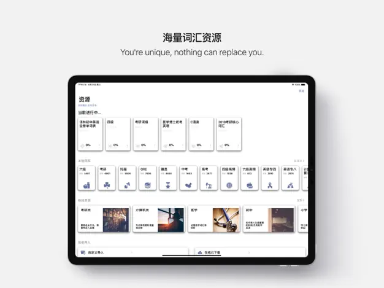
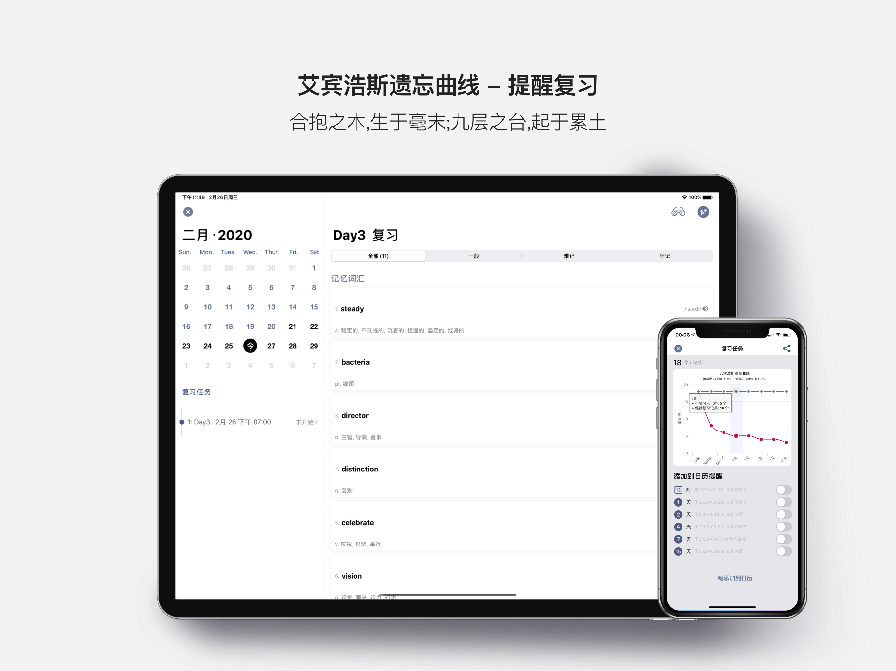
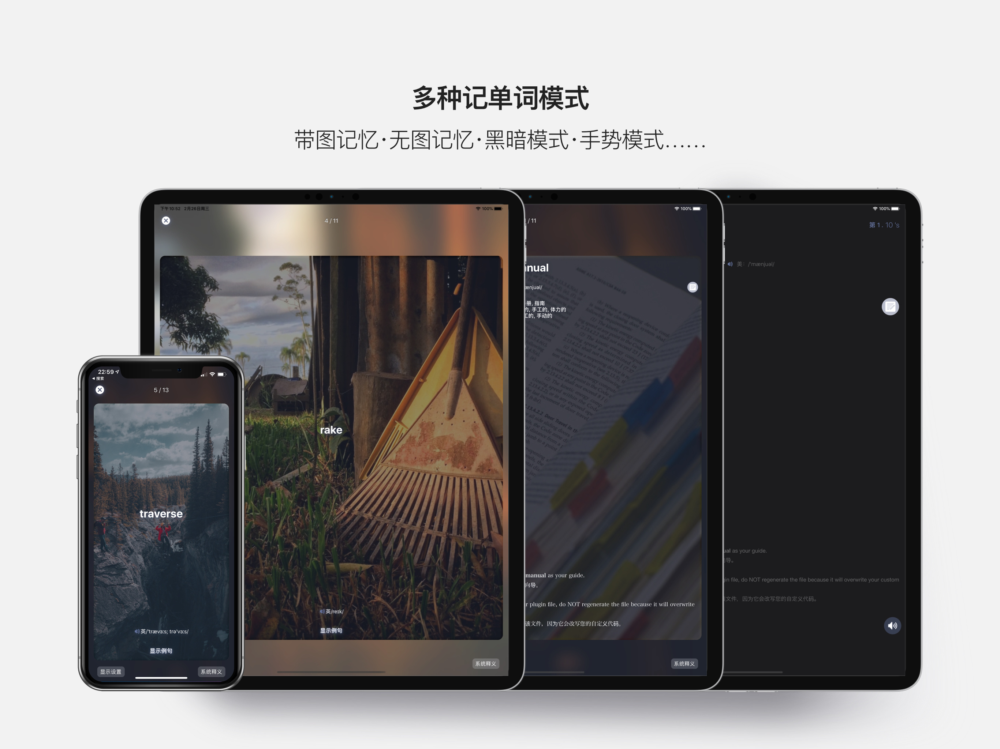
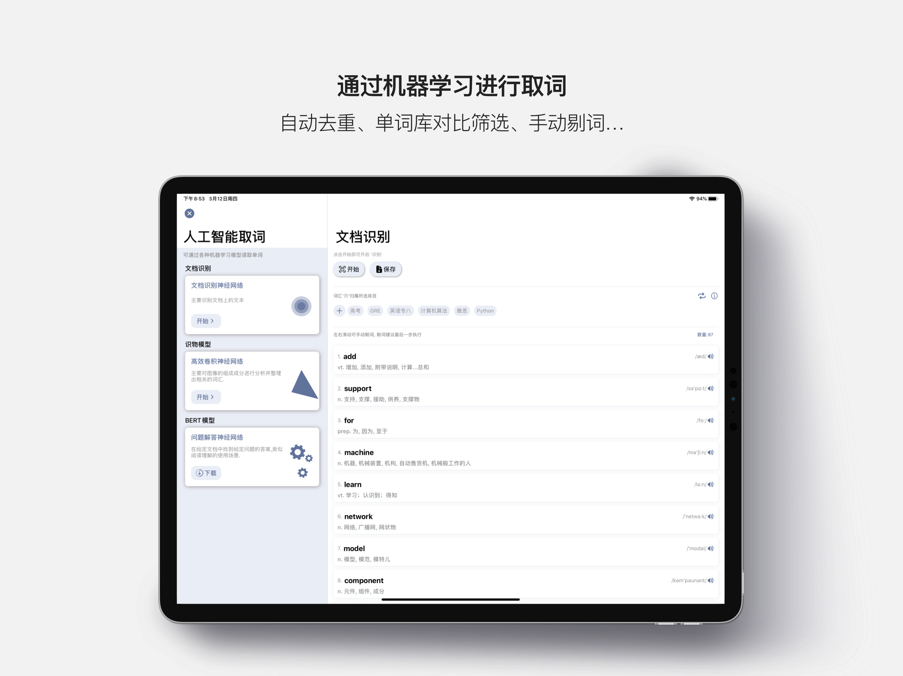
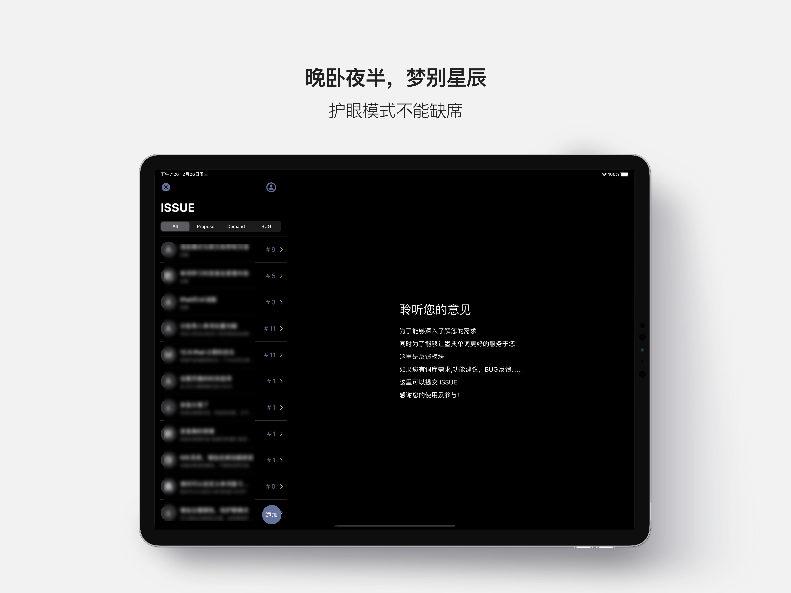
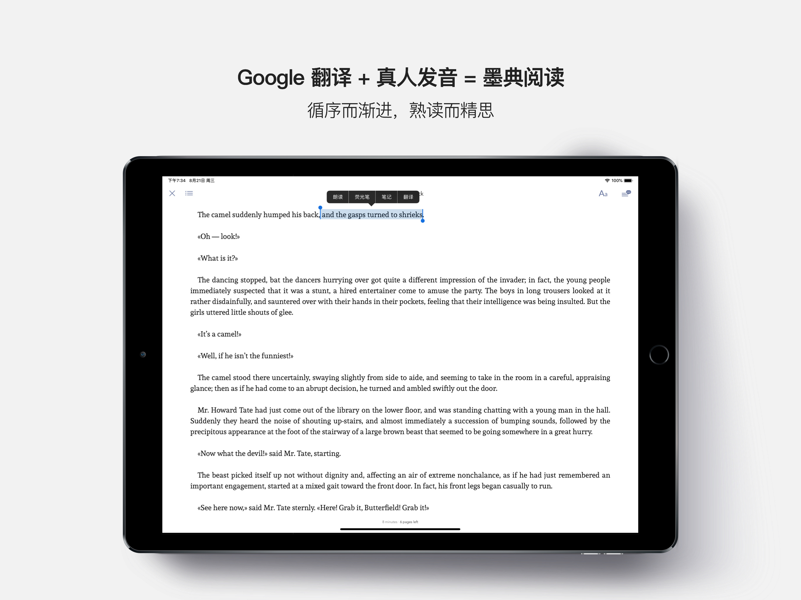
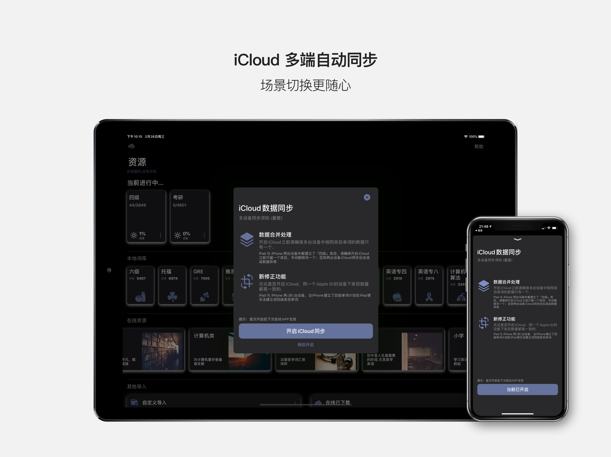
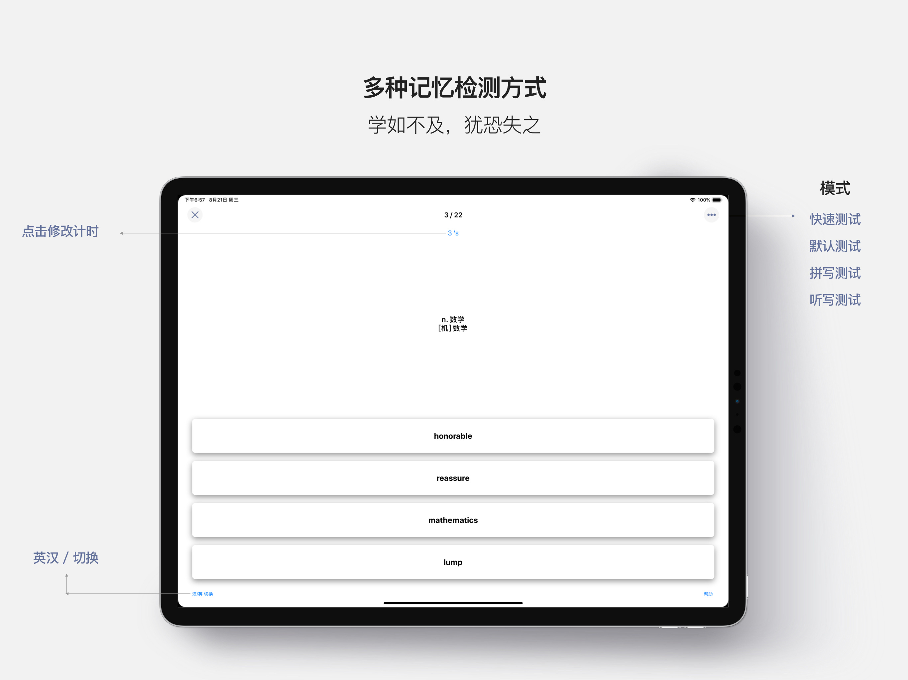

艾宾浩斯智能复习
按遗忘规律自动排定第 1、2、4、7、15 天的复习节点，让单词在即将忘记时恰好重现。你只管学，什么时候复习交给算法。
自动排程临界点唤醒日历提醒
MEMORY SCIENCE · 记忆科学驱动
墨典单词依据艾宾浩斯遗忘曲线，在你即将忘记的那一刻安排复习。 不复习只记得 5 个，坚持复习记得 18 个——把力气花在对的时刻。
THE SCIENCE · 遗忘的真相
1885 年，心理学家赫尔曼·艾宾浩斯发现：学过的内容会在数小时内急速流失。真正的关键不是学得多，而是在遗忘发生的那一刻，恰好复习。
新学的单词 20 分钟后就开始溜走，一天后可能只剩三成。死记硬背，是在和大脑的天性对抗。
墨典把复习安排在记忆即将消退的第 1、2、4、7、15 天——每一次唤醒，都让曲线抬得更高、掉得更慢。
App 内实测：一组 18 个单词，不复习只留下 5 个；跟着墨典的节奏走，18 个全都记住。
FEATURES · 核心功能
每一个功能都只为一件事——让你真正记住单词。没有社交，没有信息流，没有让你分心的一切。
按遗忘规律自动排定第 1、2、4、7、15 天的复习节点，让单词在即将忘记时恰好重现。你只管学，什么时候复习交给算法。
选词库、定计划、做任务、清复习——一条完整闭环，把"想学好"落成每天可执行的一小步。
内置离线词典，飞机上、地铁里、没信号也能查词，深入了解每个单词的释义与用法。
四级、六级、考研、托福、雅思、GRE、程序员、中考、高考……总有一本正是你要考的。
拍下书本、路牌、屏幕里的英文，自动分词拆解，一键把陌生词收进生词本。
为每个词写下你的联想与记忆锚点，调出更多例句辅助理解，攒出一本只属于你的词典。
HOW IT WORKS · 学习流程
从多本考试词库里挑定你的主线目标。
按你的时间，定下每天学多少的节奏。
每天完成新词学习，一小步稳步推进。
跟着艾宾浩斯节点清复习，把记忆钉牢。
SCREENS · 界面一览
拖动浏览 · 每一屏都为背单词服务








LIBRARY · 词库
主流考试词库全覆盖，选定目标即可开始；具体词库以 App 内当前版本为准。
WHY 墨典 · 为什么是它
没有开屏广告，没有推荐流，打开就是背单词，学完即走。
核心背诵与本地词典无需联网，通勤、旅途随时开背。
数据以 iCloud 同步于你自己的账户，学习记录只属于你。
手机上学、平板上复习，进度通过 iCloud 无缝衔接。
“合抱之木，生于毫末；
每天一点，是墨典相信的学习方式
九层之台，起于累土。”
FOR YOU · 适合谁